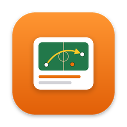

MatchBrief サポート
ご質問・不具合報告・ご要望：takawmd2524@gmail.com
使い方
- 「新しい試合」で前半・後半の動画を取り込みます。
- 再生しながら数字キー（iPadはボタン）で場面を登録します。「候補」タブで歓声の上がった時刻を自動で探せます。
- 場面を選び、クリップカードに「なぜ見せる」「次にどう活かす」を書きます。Dキーで止めた映像に描き込めます。
- 「書き出す」で選手に見せるクリップ（テロップ・描き込み入り）をまとめて書き出します。
- 「次戦プラン」で課題や相手の傾向に合う練習メニューを確認し、「レポート・スライド」でPDFやPowerPointを作ります。
サブスクリプション
解約・プランの変更は、App Storeのアカウント設定（サブスクリプション）から行えます。
Support
Questions, bug reports and requests: takawmd2524@gmail.com